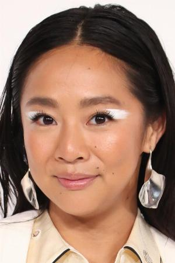

Sinopsis
La película sigue el épico viaje de un robot -la unidad 7134 de Roz, "Roz" para abreviar- que naufraga en una isla deshabitada y debe aprender a adaptarse al duro entorno, entablando gradualmente relaciones con los animales de la isla y convirtiéndose en padre adoptivo de un gosling huérfano.
Ficha de la pelicula
Año: 2024
Duración: 101 min
Pa√≠s: üá∫üá∏ Estados Unidos
Director: Chris Sanders
Nota: 7,7
Reparto:

Lupita Nyong'o
Pedro Pascal
Kit Connor
Stephanie Hsu